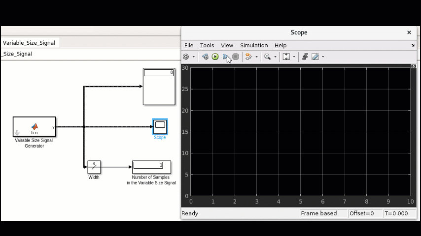
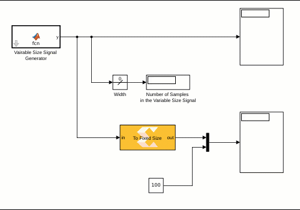
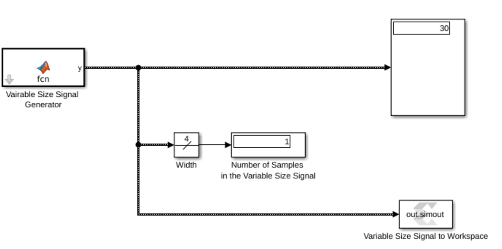

At every invocation of an AI Engine kernel, the number of output samples may depend on different factors such as the input signal or a Run Time Parameter (RTP) trigger. For example, if a kernel with a synchronized window input does not receive enough input samples (equal to the size of the window size set for the kernel), it will produce no output. In Model Composer, this behavior is modeled as a variable-size signal. A Simulink variable-size signal is a signal whose size (the number of elements in a dimension), in addition to its values, can change during a model simulation. All AI Engine blocks can consume and produce variable-size signals. Look at the video below that showcases a variable-size signal:
 Use the Simulink Width block to see the number of elements in the variable-size signal.
Use the Simulink Width block to see the number of elements in the variable-size signal.
 All AI Engine blocks can consume variable-size signals and also produce variable-size signals.
All AI Engine blocks can consume variable-size signals and also produce variable-size signals.
 Note how a varrable signal looks different than a fixed size signal in Simulink.
Note how a varrable signal looks different than a fixed size signal in Simulink.
You can view variable-size signals with a display block or a scope block. Note if the variable-size signal is not full, the scope shows empty spaces.

 You can view variable-size signals using a display block, a scope block, or write them into the MATLAB workspace.
You can view variable-size signals using a display block, a scope block, or write them into the MATLAB workspace.
At times you need to convert a variable-size signal to a fixed size signal. This is necessary if you need to use a block that does not support variable-size signals. In such cases, you can use the To Fixed Size block. The input to this block will be buffered till the number of samples reaches the Output Size parameter set on the mask. The buffered samples will then be transferred to the out port, and the valid port is set to true. When there are not enough samples buffered, the out port will be a vector of zeros, and the valid port is set to false.

You can write a variable-size signal to MATLAB workspace using Variable-Size Signal to Workspace block. From there, you can post process the data. Note that the data will be concatenated and unlike the "To Fixed Size" block, no zeros are introduced.
